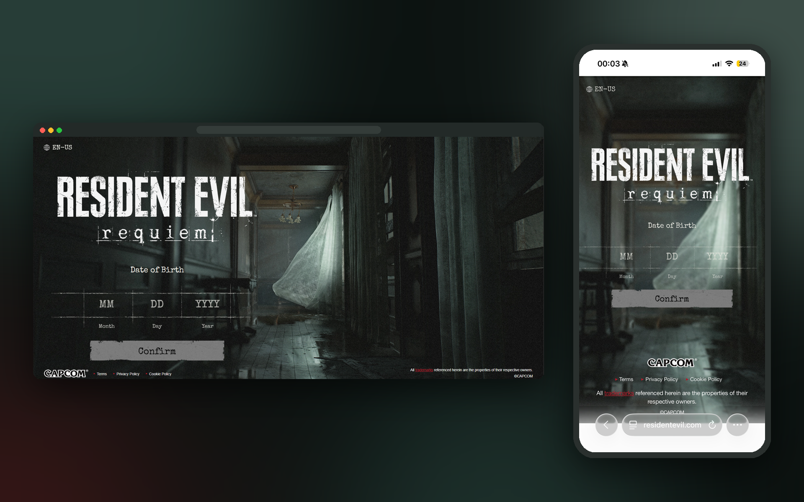
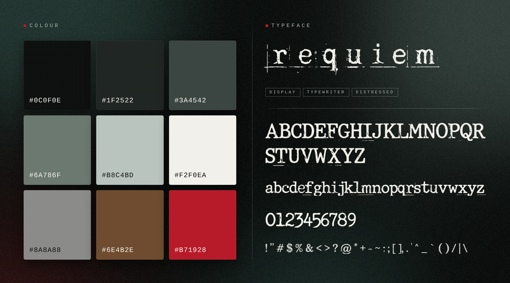
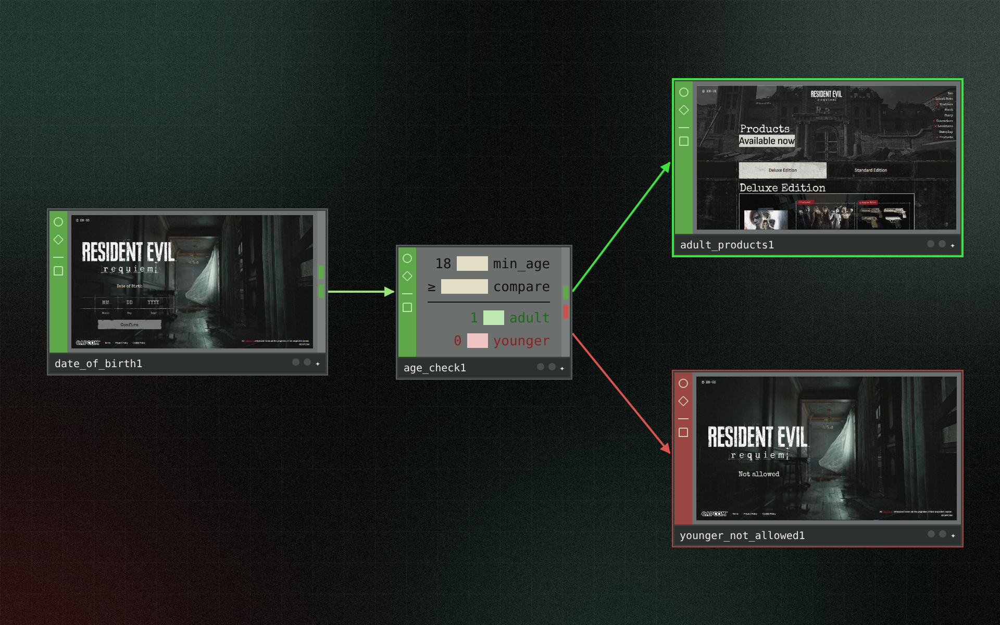
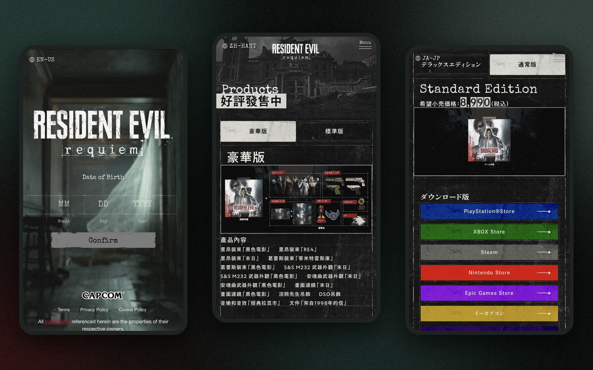
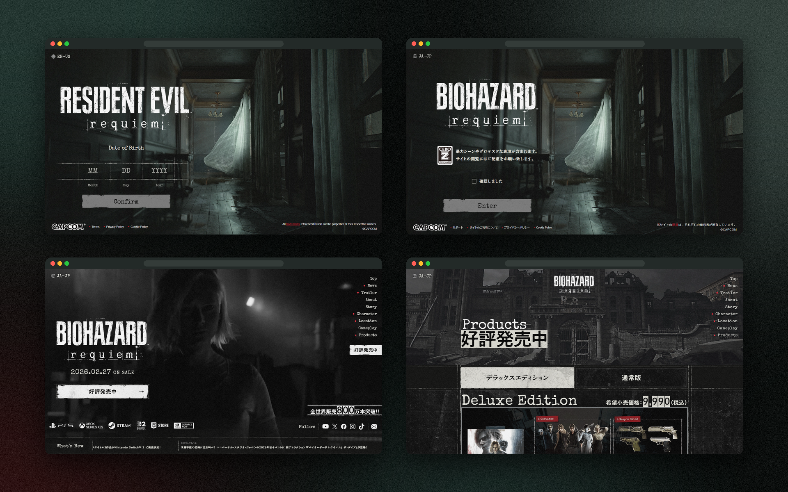

Resident Evil Requiem's age gate
Age Appropriate DesignContent ModerationBrand IdentityHuman-Computer Interaction

An age-verification landing page for Resident Evil Requiem that keeps the game's eerie atmosphere, while kindly restricting younger visitors through interesting elements.
Overview of the problem
Most age gates are boring and blunt, and Resident Evil Requiem's is no exception. The site opens on a creepy hallway, then asks for your date of birth in a plain form. If you're under 18, you just get "Not allowed" and nothing else. The team wanted to keep the check working but make it feel like part of the game, and not lose younger visitors to disinterest.
Context
Resident Evil Requiem is a mature-rated survival horror game, so its site needs to check visitors' ages while still feeling like part of the game's world. The page had to work for:
- adult fans who want to get to the content quickly
- younger fans curious about the game
- parents and guardians checking what the game is about
- age-appropriate design and content moderation guidelines

Goals
To design an age gate that protects younger users without treating them as a problem, and that still feels true to the Resident Evil brand.
- Be honest and clear: Explain why the check exists in plain, friendly language.
- Engaging: Create an experience that doesn't cause disinterest in younger users and fans.
- Stay on brand: Keep the game's tension and visual identity without being frightening.
- Adaptable: The layout must accomodate and translate well for multiple languages.

I designed an interactive age-verification landing page for Resident Evil Requiem that does not betray the franchise’s dark, immersive visual identity while prioritizing accessibility and ease of use. Through intuitive age-selection interactions, the design aims to guide users through content restrictions while making age verification straightforward, inclusive, and responsible for younger audiences.
Process & key insights
We worked through the page together in co-design sessions: auditing existing age gates, researching age-appropriate design and content moderation guidelines, studying the game's brand identity, and then sketching, prototyping and refining both the adult and younger-visitor journeys on mobile and desktop.
- Explaining builds trust: Telling users why they're being asked made them less likely to skip or lie.
- Dead ends feel like punishment: Giving younger users somewhere to go kept the experience positive.
- Atmosphere without fear: Brand mood can come from type, colour and texture rather than graphic imagery.


Results of what changed
The co-designed landing page offers:
- A quick, clear verification step for adult visitors
- A friendly, guided path for younger visitors instead of a dead end
- An age gate that feels like part of the Resident Evil world
Reflection of what I learned
Working on the Requiem age gate showed me that even the smallest, most "boring" parts of a site still shape how people feel about it. It's easy to treat an age check as a box to tick, but it's the very first thing visitors see, so it sets the tone for everything after. I learnt to design for both outcomes, not just the happy path, because the "Not allowed" screen deserves as much care as the one adults get through to. Pulling the colours and type straight from the game also helped me make something that felt like part of the world instead of something stuck on top.
More work

Someone.health
Web designI designed the visuals for a mental health clinic's platform so users can manage their well-being without being overwhelmed.

HealthBright
Product conceptI envisioned screens so users feel more comfortable and confident in managing their mental health.

Tapas
Web designI redesigned layouts to be cleaner and energy efficient, helping older devices navigate content more easily.